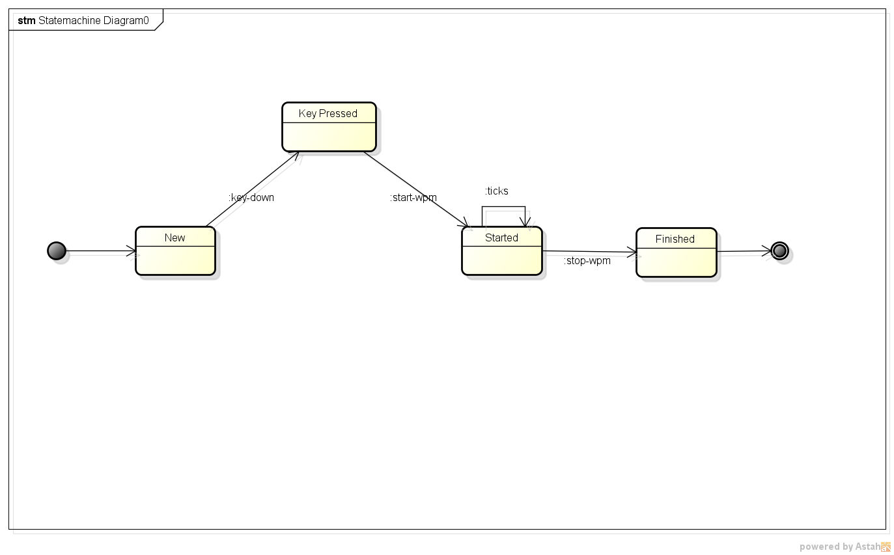

It’s Clojure!!!!!
$ lein do clean, figwheel
or
$ boot serve -d target watch reload cljs-repl cljs target -d target
Reagent is a simple ClojureScript interface to React.
(defn wpm-app []
(let [test-words (subscribe [:test-words])
status (subscribe [:status])]
[:div
[:section#wpm-app
[:header
[:h1 "Words Per Minute"]]
[:section#main
[:div
[display-panel @test-words]
[control-panel @status]]
(when (= @status :finished)
[stats-panel])]
[:footer]]]))
;; render the page
(reagent/render [wpm-app] (.getElementById js/document "app"))
re-frame is a pattern for writing SPAs in ClojureScript, using Reagent.
app-db –> components –> Hiccup –> Reagent –> VDOM –> React –> DOM ^ |
| v |
handlers <–— router <–——————— (dispatch [event-id event params])

Created by sniperliu.